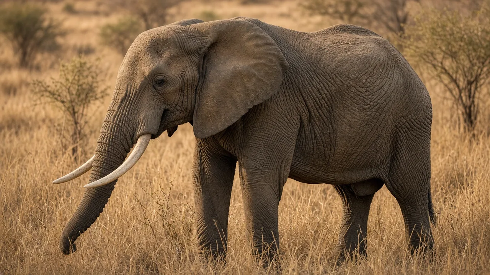
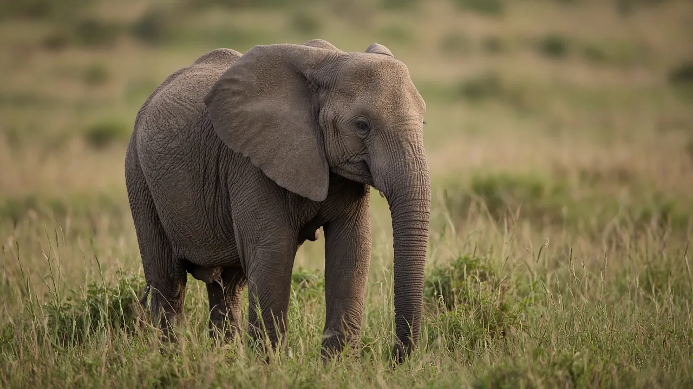

Why do elephants have tusks?
Elephants have tusks because they are useful tools. Tusks are oversized upper incisor teeth that elephants use to dig for water and salt, strip bark, move objects, defend themselves and compete with rivals. They keep growing throughout life.

The short answer
Tusks are an elephant's multipurpose tools. They are the elephant's only incisors, greatly enlarged, and they grow from the upper jaw throughout life. Elephants use them to dig, to strip bark from trees, to lift and push objects, to defend themselves and calves, and to display to rivals.
What tusks are made of
A tusk is a tooth. It is made mostly of dentine, the material sold as ivory, with a cap of enamel at the tip that soon wears away. Inside is a pulp cavity containing nerve tissue, and about a third of the tusk sits hidden inside the skull. Calves have small milk tusks that fall out at around a year old, and the permanent tusks show beyond the lip at two to three years (San Diego Zoo Wildlife Alliance). Our anatomy guide covers the details.
What elephants use tusks for
- Digging. Elephants dig for water in dry riverbeds and for salt and minerals in the soil.
- Feeding. Tusks help strip bark and break branches, opening up food the trunk alone could not reach.
- Lifting and moving. Tusks act as levers for moving logs or clearing a path, and some elephants rest the heavy trunk on them.
- Defence and rivalry. Bulls spar with their tusks, and tusks are a real weapon against predators.
Like people who are left or right handed, elephants tend to favour one tusk, which is usually the more worn of the two.

Do all elephants have tusks?
No. In African savanna and forest elephants, both males and females usually have tusks. In Asian elephants, usually only males grow large tusks, and many females have small tushes that barely show (see African vs Asian elephants).
Some elephants are born with no tusks at all. In Gorongosa National Park, Mozambique, heavy ivory poaching during the civil war killed many tusked elephants, and tuskless females became far more common afterwards. Shane Campbell-Staton and colleagues linked the trait to genes on the X chromosome (Campbell-Staton et al. 2021). Read the full story in why some elephants are born without tusks.
Why tusks matter for conservation
Because ivory is valuable, tusks have made elephants a target for poachers. Losing tusks also has a cost for the elephants themselves, since a tuskless elephant must manage without its digging and feeding tool. The conservation page explains the current threats.
The bottom line
Tusks are enlarged incisor teeth that keep growing, and elephants rely on them for digging, feeding, moving things and fighting. Where poaching was heavy, tuskless elephants have become more common.
Frequently asked questions
Are elephant tusks teeth?
Yes. Tusks are modified upper incisors, made mostly of dentine (ivory), with a pulp cavity and nerve tissue inside.
Do female elephants have tusks?
In both African species, females usually have tusks. In Asian elephants, usually only males grow large tusks, and females have small tushes or none.
Do tusks grow back if cut?
A tusk keeps growing from its base, but about a third of it sits inside the skull, and the inner part contains nerve tissue. Cutting into it can cause pain and infection, so removing a tusk is not like trimming a nail.
Why are some elephants born without tusks?
Tusklessness is partly genetic. In Mozambique's Gorongosa National Park, heavy poaching during the civil war left far more tuskless females, and researchers linked the trait to genes on the X chromosome (Campbell-Staton et al. 2021).
Sources
Cite this page
APA
TuskWise. (2026, November 6). Why do elephants have tusks? https://tuskwise.com/blog/why-do-elephants-have-tusks.html
MLA
“Why do elephants have tusks?” TuskWise, 6 Nov. 2026, tuskwise.com/blog/why-do-elephants-have-tusks.html.
Chicago
TuskWise. “Why do elephants have tusks?” TuskWise. Last modified November 6, 2026. https://tuskwise.com/blog/why-do-elephants-have-tusks.html.